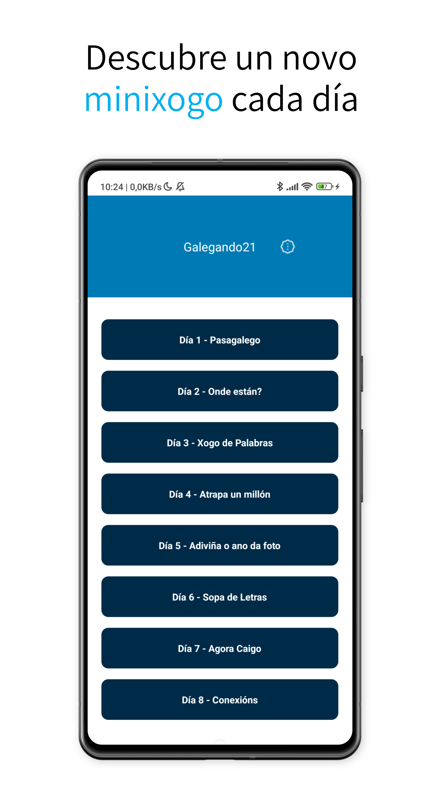
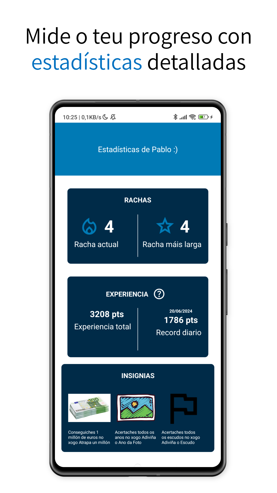
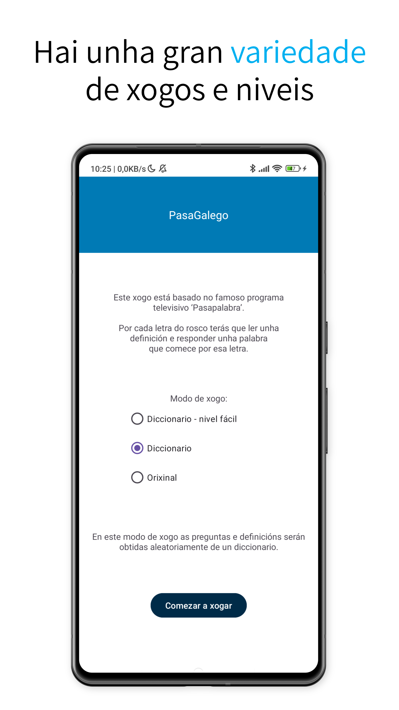
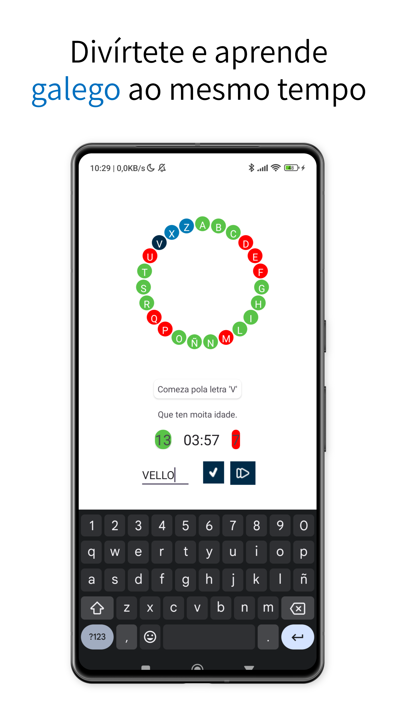
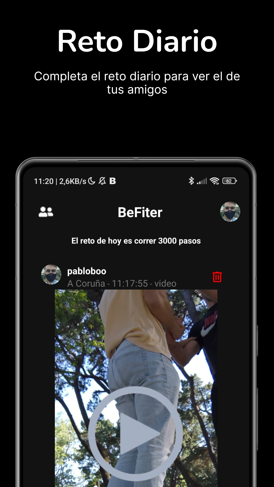
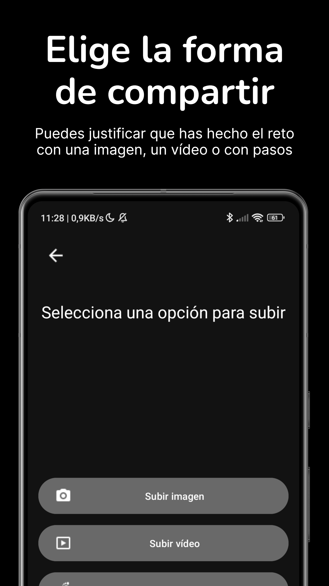
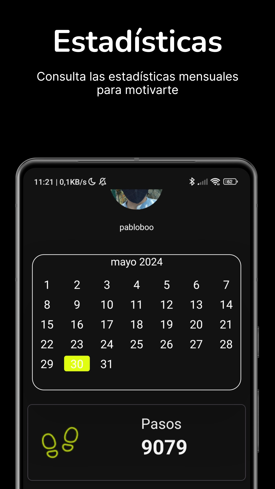
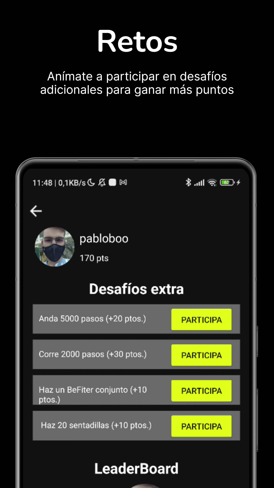
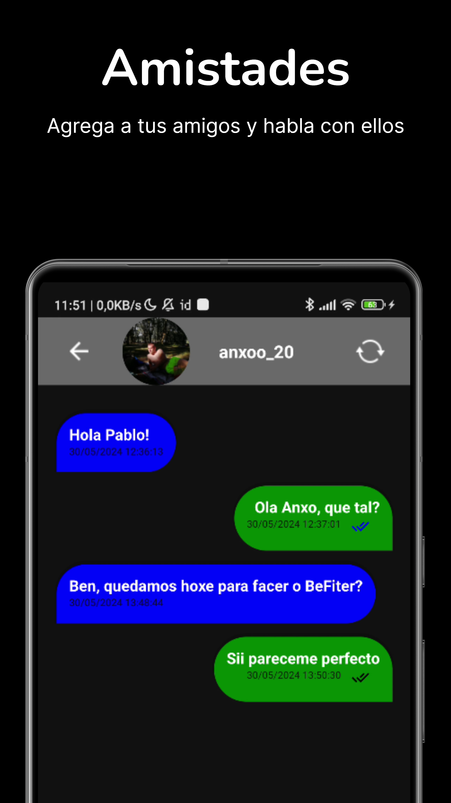

Hola, soy Pablo :)
Soy un estudiante de Ingeniería Informática en la UDC y estoy buscando un trabajo de prácticas usando Kotlin.
Sobre mí
Educación
-
Máster Universitario en Ingeniería Informática

UDC, 2023 - Presente
Este título garantiza la adquisición de todas las competencias establecidas para la profesión.
-
Grado en Ingeniería Informática
UDC, 2018 - 2023
Especialización en ingeniería de software.
-
C1 Advanced - Puntuación 184

Cambridge University Press & Assessment English, Sept. 2018
ID de credencial: 189ES0295007
Experiencia
-
Enxenio

Jornada parcial, abril 2022 - marzo 2023
Prácticas, febrero 2022 - abril 2022
Desarrollador Full Stack
Java Spring Angular
Descarga mi CV aquí.
Proyectos
Kotlin
- 
- 
- 
- 
- 
- 
- 
- 
- 
BeFiter
Kotlin Firebase
Aplicación móvil similar a BeReal pero enfocada en el ejercicio físico.
demo BeFiterOtros
ElectrodatosWrapped
Python Bokeh
Visualizador interactivo de consumo de electrocidad desarrollado para la edición de HackUDC de 2024.
repo ElectrodatosWrapped
TFG
Angular Python Flask
Proyecto final de grado sobre un software que permite a estudiantes y profesores practicar la pronunciación en español.
aprendiendo-pronunciacion-espanolStudyPlanner
Flutter Firebase
App móvil creada para que estudiantes puedan gestionar sus tareas.
demo StudyPlannerAplicación de ropa
Python Scrapy React
Aplicación web sobre recuperación de información en el ámbito de la moda.
repo App RIHabilidades
Kotlin
Actualmente estoy desarrollando mi Trabajo Final de Master y también desarrollé una red social usando Kotlin
Programación en Java
Competente en el lenguaje de programación Java. Aplicado en la experiencia profesional en Enxenio como Desarrollador Full Stack y utilizado en proyectos de desarrollo backend.
Framework Angular
Habilidades en Angular para desarrollo frontend. Utilizado en Enxenio como Desarrollador Full Stack y durante el Proyecto Final del Grado.
Flutter
Implementé dos aplicaciones multiplataforma usando Flutter.
GitHub
Competente en control de versiones utilizando Git y GitHub. Utilizado tanto en los estudios como en la experiencia laboral.
Programación en Python
Uso de Python en proyectos académicos durante los estudios de Ingeniería Informática, incluido el Proyecto Final que involucra Flask. Utilizado en desarrollo backend.
Framework Flask
Uso de Flask en el Proyecto Final del Grado para creación de APIs.
Base de datos MySQL
Competente en MySQL para la gestión de bases de datos. Usado en estudios académicos para almacenamiento, recuperación y gestión de datos en varios proyectos que involucran bases de datos relacionales.
Spring Framework
Experiencia con Spring Framework en estudios académicos. Utilizado para desarrollo backend basado en Java, implementando aplicaciones y servicios a nivel empresarial.
Framework React
Conocimiento adquirido de React para el desarrollo frontend durante estudios académicos. Usado para implementar interfaces de usuario dinámicas y aplicaciones.
Metodología Design Sprint
Finalización con éxito una formación de 15 horas en la metodología Design Sprint. Competente en el desarrollo de hipótesis, creación de prototipos, y prueba y validación de ideas dentro de un marco de 5 días. Adquirido a través de una insignia verificada obtenida de Kelea.